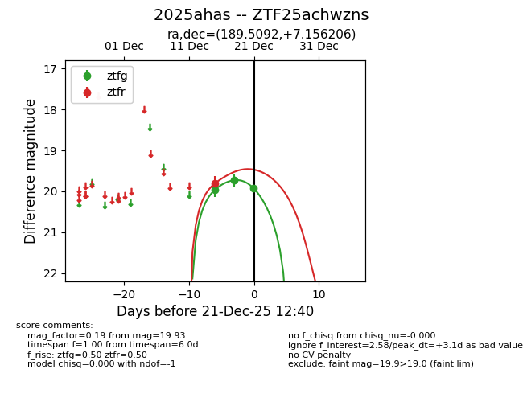
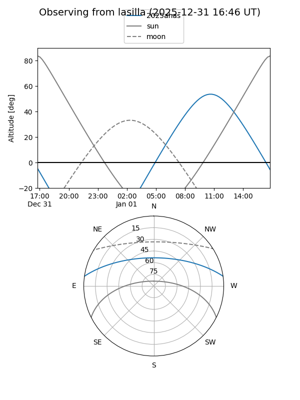
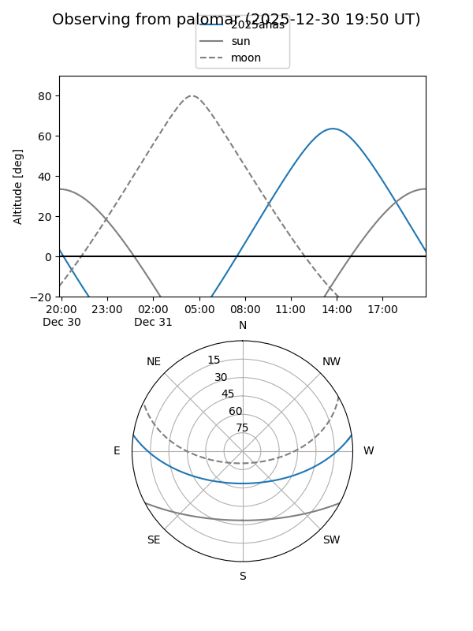
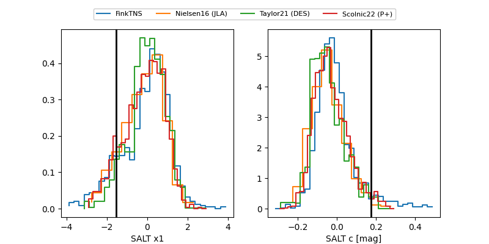

2025ahas
Target 2025ahas at 2025-12-21 12:42
Aliases and brokers:
FINK: fink-portal.org/ZTF25achwzns
Lasair: lasair-ztf.lsst.ac.uk/objects/ZTF25achwzns
ALeRCE: alerce.online/object/ZTF25achwzns
TNS: wis-tns.org/object/2025ahas
YSE: ziggy.ucolick.org/yse/transient_detail/2025ahas
alt names
ZTF25achwzns (ztf,fink_ztf)
2025ahas (tns,yse)
Coordinates:
equatorial (ra, dec) = 189.5092,+7.15621
equatorial (HMS+DMS) = 12:38:02.20,+07:09:22.34
galactic (l, b) = (293.2755,+69.77630)
Flags:
Photometry:
last ztfg=19.93, ztfr=19.80
3 ztfg, 1 ztfr detections
Lightcurve

Visibility


Additional plots
